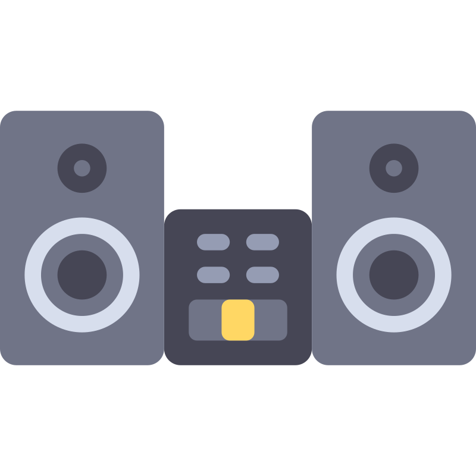
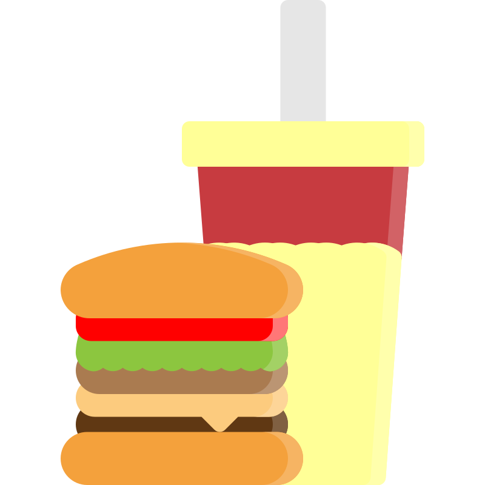
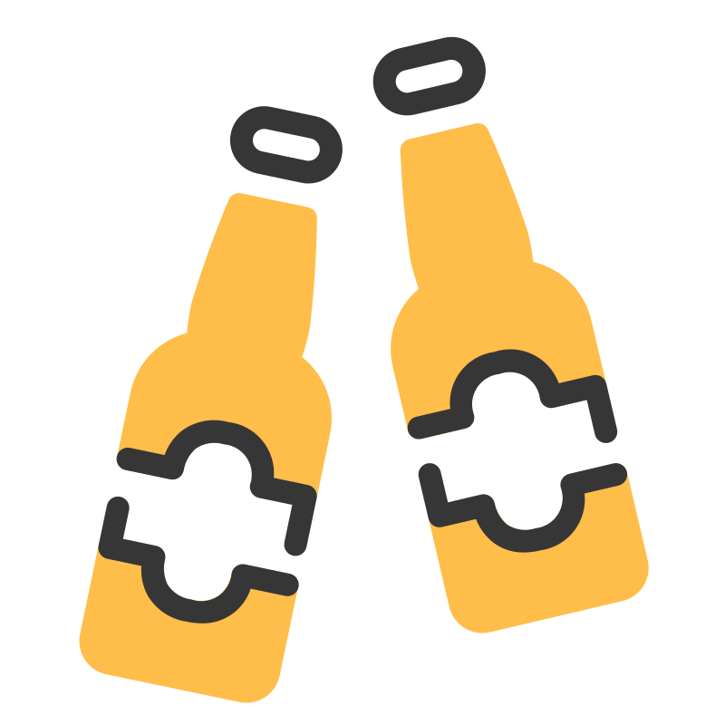
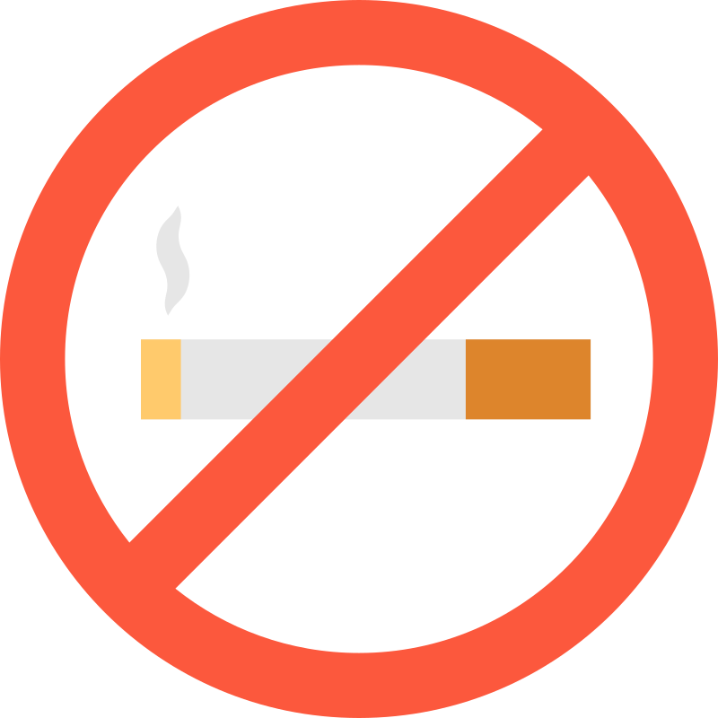
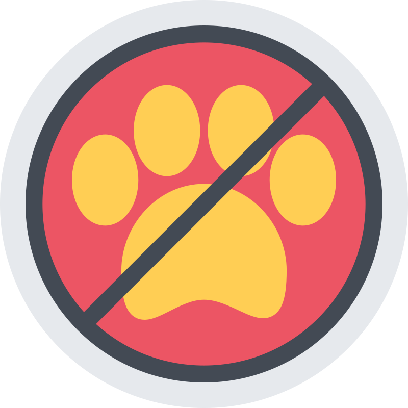

Prohibido el ingreso de bocinas y altavoces:
Queda estrictamente prohibido introducir bocinas portátiles, parlantes bluetooth o equipos de sonido con volumen alto que perturben a los jugadores de canchas aledañas.

Prohibida comida externa y coolers:
No se permite el ingreso de alimentos externos preparados, snacks grasosos o coolers al área de juego. Solo se autoriza hidratación personal (agua o isotónicos).
Prohibidas botellas y recipientes de vidrio:
Por motivos de seguridad física y prevención de cortes graves, todo envase debe ser de plástico reutilizable o aluminio deportivo termoaislante.

Cero alcohol y sustancias ilícitas:
El campus universitario mantiene política de tolerancia cero respecto al consumo de alcohol, estupefacientes o sustancias psicotrópicas.

Prohibido fumar y vapear:
Todas las instalaciones deportivas, gradas, techados y vestidores son áreas 100% libres de humo y vaporizadores electrónicos.

Mascotas restringidas:
No se permite el ingreso de mascotas al césped sintético, tabloncillo de madera ni canchas techadas (única excepción: perros guía y asistencia acreditada).